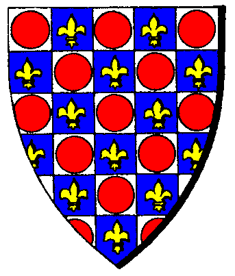

|

|
Das schwarze Brett
|
|
| Übersicht,
Allgemeines |
|
Konvents- und Götter-RP (7  ) )
|
Support
 |
Die Götter und Konvente liegen außerhalb des Wirtschaftsbereichs von Scherbenwelten.
Wer Mitglied in einem Konvent wird, lässt sich also damit auch auf ein gewisses RP ein. Wie sich jeder im Konvent einbringt, bleibt jedem selbst überlassen.
Aber Konvente und auch die Götter sind bei weitem nicht so vorhersagbar wie andere Teile von Scherbenwelten.
Zuerst einmal zum Konvents-RP. Die Konvente haben eine gewisse Macht - als Form von weltlicher Macht - über die sie verfügen, im schlimmsten Fall sogar missbrauchen können. Ein Aufruf des Konvents gegen einen Ketzer führt zur Mobilisierung der gläubigen Anhänger.
Ein niedermetzeln fremder Glaubenskrieger führt zu einer (automatischen) Verketzerung.
Meinungsverschiedenheiten zwischen den Konventen und innerhalb der Konvente sind normal.
Die Götter betrachten das mehr oder weniger wohlwollend, meistens etwas weniger.
Eingreifen werden sie nur, wenn gegen grundlegende Eigenschaften eines Gottes verstoßen werden (zB ein Wendariapriester infiziert bewusst andere mit einer Krankheit).
Oder, wenn gegen vom Konvent selbstauferlegte (und in langer Tradition gehegte) Regeln verstoßen werden (Larjapriester tötet Wichtel).
Hier haben die Konvente durchaus die Macht, durch durchgängiges und konsistentes RP das Wesen eine Gottes zu ändern (Beispiel wäre hier noch immer Larja und die Wichtel).
Aber selbst dann ist ein göttliches Eingreifen nicht garantiert.
Wir bekommen nun einmal nicht jede Verfehlung mit, dies bedeutet aber auch, dass auch die Götter nicht jede Verfehlung mitbekommen.
Auch bewerten sie nicht alles unter den gleichen Gesichtspunkten. Götter sind leider launisch.
Den Göttern ist es durchaus bewusst, dass einige Mitglieder ihre weltlichen Verpflichtungen gegenüber ihrer Nation wichtiger nehmen als ihrem Gott gegenüber.
Die Götter sind davon nicht wirklich begeistert und es kann in Zukunft durchaus sein, dass dies zu Konsequenzen führt. Aber es kann genauso passieren, dass die Götter weiterhin nicht eingreifen. Die Götter sind unberechenbar.
Die Strafe für Verfehlungen können breit gefächert sein.
Ein Traum oder eine Vision weisen den Gläubigen darauf hin, in Zukunft anders zu handeln.
Der plötzliche Verlust von Opferwaren, Ausschluss aus der Kirche bis hin zu einem persönlichen Armageddon (Urvan-Erzpriester opfert in den Kultstätten aller Absieben Sklaven).
Dies hängt vom Vergehen, vom Rang des Gläubigen und der Laune der Götter ab und können nicht pauschal katalogisiert werden.
Ein Verkünder wird als Vorbildfunktion sicher härter betroffen sein als ein einfacher Priester.
Für die Gläubigen gilt einfach: es gibt die Götter und ich bin zu klein, um das göttliche Handeln voll zu verstehen.
Für die Spieler gilt: Konvente sind RP-Bereich, die Konsequenzen darin sind nicht immer vorhersagbar.
Zur aktuellen Geschichte rund um die Tura-Acker:
Die Vorfälle/Vorgänge waren schon länger geplant und wurden nicht ausgelöst durch das Ableben des Tura-Verkünders. Dies war Zufall, passt allerdings gut in den Gesamtzusammenhang.
Der Tura-Konvent wurde lange Zeit vom RP geprägt, die Mol-Tage wurden als Feierlichkeiten eingeführt.
Hier hat konsequentes RP das Wesen eines Gottes mit geändert, es haben sich eigene Regeln etabliert.
Die Friedenspflicht der Moltage und die Weihe der Tura-Acker gehören hier dazu.
Nachdem ein Verkünder Turas die Ruhe der Moltage gebrochen hat, gab es erste Konsequenzen.
Die Betreuung der Tura-Acker wurde in die Hände von Laien gelegt, dies war bis jetzt immer die Aufgabe der Priester Turas.
Der Ausfall der letzten Mol-Tage. Hier müssen wir anmerken, dass uns natürlich bewusst ist, dass es so etwas wie RL gibt und auch kurzfristig Termine dazwischen kommen können. Eine Verschiebung der Mol-Tage wäre aber durchaus möglich gewesen, aber dies war letztlich nur ein Punkt von vielen.
Eine dauerhafte Lösung für die Probleme mit den Tura-Ackern wird es sicherlich nur geben, wenn sich der Konvent wieder auf alte Werte besinnt.
Die Dämonenkonvente sind insgesamt deutlich freier in ihren Möglichkeiten und haben weniger Einschränkungen.
Die Götter und Dämonen werden auch in Zukunft in das Spiel eingreifen, oft unerwartet und eigentlich nie vorhersagbar.
Inwieweit man betroffen ist, hängt von der eigenen Spielweise ab.
Natürlich kann es auch einmal globale Eingriffe geben, welche Spieler betrifft, die sich aus dem Glaubens-RP bisher rausgehalten haben.
Aber dies gehört zu einer lebendigen Scherbenwelt dazu.
Wir hoffen, wir konnten hier nun einige Fragen und die aktuelle Situation ein wenig erläutern. |
22.02.13 22:20
|
|
| Cyrik (RIP) |
was heißt den "persönlichen Armageddon" ? Das der Char stirbt? |
22.02.13 22:38
|
|
| Elamo (RIP) |
Alle Gebäude werden -zappzerapp- geschliffen ^^ |
22.02.13 23:49
|
|
Aahz
 |
ooch, mir gefaellts wenns bunter wird. hauptsache der einfluss auf unbeteiligte wird für diese nicht spielzerstörend.
und nen paar piraten vor den häfen, da darf man ja auch ruhig mal fremde dritte um hilfe fragen. |
23.02.13 1:04
 |
|
Galaton Dragus
 |
Lies mal genauer Aahz ;) Jeder der auch nur beiläufig im Konvent mitschwimmt ist absofort beteiligt, bzw. hat sich zu beteiligen. Leute, die in ihrer Nationsbeschreibung NON-RP stehen haben, aber den RP-Bereich Konvent/Götter blockieren bzw. ausnutzen habens bald schwer...ich find das gut, kommt nur viel zu spät! |
23.02.13 9:03
|
|
Agathe Wolfskopf
 |
Guter Beitrag, besser spät als nie :) Ich freue mich schon auf den frischen Wind!
@Cyrik: Lass dich doch überraschen und probier´s aus ;)
Bezüglich Moltage so haben diese im RP stattgefunden, nur ohne einem einzigen Tura-Konventsmitglied.
Selbst wenn der Verkünder ausfällt (RL hat Vorrang!) war es wohl eher prägend, dass sich nichteinmal ein kleiner Priester hinverirrt hat. |
23.02.13 12:32
|
|
Falaron Talgrund
 |
Rollenspiel heißt eine Rolle zu spielen und wenn ich und eine handvoll Freunde meinen Ressorcen investieren zu müssen um den Konvent X zu übernehmen um dort die Regeln umzukrempeln dann ist das halt so und jeder andere Spieler hat ja das Recht es ebenso zu machen oder mit seinen Mitteln dies zu verhindern abzuschwächen oder nach eigenen Belieben zu handeln usw usf schließlich macht das ja die Interaktion zwischen den Spielern und auch das Spiel aus.
Ich lehne diese Eingriffe mit Schädigung einzelner Spieler oder Spielgruppen durch die Spielleitung ab vor allem da dort ein völlig falsches Verständnis vom Rollenspiel herrscht.
Es geht beim Rollenspiel nicht darum den ganzen Tag blöd/hoch gestochen daher zu schwätzen oder belanglose Geschichten zu schreiben die keinen/kaum einen Bezug zu diesen Spiel haben sondern darum in diesem Spiel zu spielen. Geschichten erzählen ist kein Rollenspiel lediglich ein Teil davon.
D.h. im Falle der Konvente man muss a) sich wirtschaftlich stärken um die Anforderungen d.h. die Opferwaren (und damit die Macht des Konventes) finanzieren zu können und b) entsprechend Politik betreiben um Unterstützer für seine Interessen/Interpretation des Konventes zu finden die Geschichten dazu sind nettes Beiwerk die sicherlich bei Punkt b) weiterhelfen aber nicht mehr.
Das Rollenspiel besteht darin seine Ziele die man sich hier gesteckt hat mit den Mitteln des Regelwerkes (hier vornehmlich der Engine) zu erreichen und jeder Eingriff der SL verfälscht diese Möglichkeiten denn die Grundvorraussetzungen sind hier für jeden Spieler gleich. |
23.02.13 13:12
|
|
Theogrimm
 |
In der Theorie finde ich die Möglichkeiten die mit einer Verfehlung im Glauben einher gehen können gut.
Doch wiederspricht sich der Support nicht selbst, wenn er zum einen schreibt, lange etablierte Traditionen zu brechen wird geahndet, man kann diese aber ändern durch konsistentes rp.
Und dann im Turabeispiel zu sagen, die einzige Möglichkeit sei das Rückbesinnen auf alte Tugenden?
Sprich wenn der Turakonvent sich nicht bereit erklärt die Moltage weiter zu führen, bzw. vllt. sogar soweit gehen muss und alle Grabwächter selbst zu stellen, wird es weiterhin Probleme mit den Äckern geben (vermutlich zu jeden Moltagen?).
Aber ist nicht genau an der Stelle auch ein konsistentes Rp möglich?
Oder ist das einer dieser gravierenden Punkte wo ein abändern nicht möglich/ nicht erwünscht ist?
Bei den Wendaris und den Krankheiten kann ich es nachvollziehen.
Aber nun von den wenigen Tura Spielern eine "Anwesenheitspflicht" einzufordern ist vllt. nicht der richtige Weg. Was würde passieren wenn die letzten aktiven Turaner den Konvent verlassen? Haben wir dann jedes Scherbenjahr eine Untoteninvasion weil sich keiner mehr drum kümmert?
Bitte nicht falsch verstehen. Der ganze Handlungsstrang hat mir Spass bereitet und ich wäre auch gewillt das die nächsten 1-2 Scherbenjahre mitzumachen im Sinne eines Wandels der Turakirche, aber selbst wenn man ein RP zum abändern der Moltage auftischt, dauerhaft dieses Problem zu haben, bis sich der Turakonvent geschlagen gibt und die Moltage traditionell bestreitet fände ich übertrieben (genauso wie die Weihe Ap *hust*. 10 Versuche a 5k Ap für einen Acker war schon arg)
Wenn der Turakonvent jetzt aus Spieler mit weniger AP-Ressourcen bestanden wäre, würden wir vermutlich heute noch auf den Äckern verzweifeln. |
23.02.13 13:58
|
|
Arthwr Dyddplentyn
 |
Prinzipiell habe ich Nichts gegen einen "Gotteseingriff" seitens der Sl,vor Allem bei groben Verfehlungen,allerdings sollte man dann konsequent vorgehen,mit gleichem Maß verwarnen,strafen sonst geht das Geheule und Gejammere sofort von Vorne los.
Ich sehs schon kommen:"wieso ich und der andere nicht,die haben es doch damals auch so gemacht etc. blabla"
Also liebe Sl,wenn ihr schon Götter spielen wollt,dann lasse ich auch keine Ausrede ala "das habe ich nicht gesehn,ist uns entgangen etc." gelten und solch schwammige Formulierungen wie:
"Den Göttern ist es durchaus bewusst, dass einige Mitglieder ihre weltlichen Verpflichtungen gegenüber ihrer Nation wichtiger nehmen als ihrem Gott gegenüber.
Die Götter sind davon nicht wirklich begeistert und es kann in Zukunft durchaus sein, dass dies zu Konsequenzen führt. Aber es kann genauso passieren, dass die Götter weiterhin nicht eingreifen. Die Götter sind unberechenbar."
helfen da nicht wirklich weiter sondern sorgen nur für weiteren Unmut,Konfusion.
Solange kein gleiches Recht/Strafmaß für alle(auch nicht Rp-ler bzw. Gelegenheitsrp-ler) garantiert ist,muss ich leider Falaron Talgrund in allen Punkten zustimmen. |
23.02.13 13:58
|
|
Arthwr Dyddplentyn
|
Sry,was vergessen:
zu rp "zwingen" ist garantiert nicht der richtige Weg und würde die sowieso arg mitgenommenen Konvente nur nochmehr "leeren".
Es gab teilweise wochenlange Totenstille und der Urvankonvent ist nun wirklich nicht der Kleinste...da konnte man schon froh sein einen ehemaligen Ketzer wie Cyrik(nicht persönlich nehmen*zwinker*)zum Verkünder wählen zu dürfen,Hauptsache es kommt wieder Leben rein!
Fazit:rp ist das was wir Spieler daraus machen,nicht was die Sl vorgibt auch wenn ab und an und da wiederhole ich mich gern,bei groben Verstößen ein "Gotteseingriff" sinnvoll ist. |
23.02.13 14:17
|
|
Alberix, Sohn des Duglim
 |
Also ich versuche mich mal zu formulieren.
Vorneweg finde ich es gut wenn die Götter "mitspielen". Und wenn ich gleich das Beispiel mit den Turaäckern heranziehe, dann habe ich dabei gar nichts zu mäckern wie es bis jetzt gelaufen ist. Auch wenn wir wir insgesamt alleine für die Weihungen ED´s in der Höhe von 100´000 AP´s verbraucht haben.
Die Frage ist, wie es weitergeht. Wir haben uns bereits überlegt welches "Gegen-RP" wir jetzt starten könnten um zu verhindern, dass künftig die Turaäcker nicht mehr so leicht entweiht werden können. Und hier beginnen sich die Vorstellungen über Tura´s Wille der SL und uns teilweise zu trennen.
Womit ich also kämpfe ist:
- Die Götter und deren Wille ist in der Hilfe knapp formuliert und lässt sehr viel Interpretationsspielraum$
- Die Götter auf SW existieren!
- Zwiesprache mit den Göttern ist aber den Konventsmitgliedern trotzdem nur im Rahmen ihres EIGENEN RP´s möglich....ich zumindest habe von Tura (via SL) noch nie mitgeteilt gekriegt, was sie danke, will und fordert. Somit tappen die Spieler absolut im Dunkeln.
- Der direkte Wille Turas wird durch die SL repräsentiert und durchgeführt.
Ich nehme das Beispiel der Grabwächter, das der SL anscheinend aus RP-Sicht als unangebracht erschienen ist.
Ich selbst habe diese Idee stark gestützt - müsste jetzt in unserem Forum nachschauen ob es vielleicht gar meine war ;-).
Warum finde ich diese Idee als RP-angebracht:
- Es gibt 7 Turaäcker
- Es gibt den Posten des Verkünders der belegt werden sollte
- Es gibt die Funktion der Tura-Ritter die aus meiner Sicht von mindestens zwei bis drei Konventsmitglieder belegt werden sollte. Hier durch Konventsmitglieder, weil diese Funktion auch die direkte Protektion beinhaltet.
- Es gibt aktuell 4 Konventsmitglieder.
Es wäre also zwingend das jeder Turaner mindestens zwei bis drei Funktionen übernimmt.
Jetzt zu den "externen" Gabwächtern.
Die Aufgaben des Grabwächters ist das Wachen über den Turaacker, die Pflege dessen und das sofortige Melden, sollte etwas ungewöhnliches sein.
So kennt z. B. die katholische Kirche Messdiener und den Sigrist (der in Deutschland glaub ich "Küster" genannt wird). Die Aufgaben des Küsters können fast 1:1 mit denen des Grabwächters verglichen werden. Der Küster ist der Wächter und Hüter der Kirche und der dazugehörigen Gebäude - der Grabwächter einfach der Hüter und Wächter des Turaackers. Der Küster erledigt die Unterhaltsarbeiten und die nötigen Vorbereitungen von Zeremonien.
Genau wie bei uns aktuell der Grabwächter, hat der Küster keine Priesterweihe und ist somit ein ganz "normaler" Gläubiger. Der Küster ist auch keine neue Erfindung sondern kann in ähnlicher Form bis ins Mittelalter zurück nachverfolgt werden.
Ich will damit nicht ausdrücken, dass die Ansicht der SL falsch ist - ich will damit nur aufzeigen das es durchaus begründbare Ansichten gibt, die von jener der SL klar abweichen.
Ich versuche nun auf den Punkt zu kommen - seit etwas über 20 Jahren spiele ich verschiedenste RPG´s (meist Pen & Paper). Eines hat sich für mich dabei immer als sehr wichtige herausgestellt, will man ein gutes Rollenspiel von allen anstellen: Gemeinsame Vorstellungen der Welt und der Weltanschauungen der einzelnen Volksgruppen.
Dies ist aus meiner Sicht bei SW nicht gegeben. Bei den verschiedenen Nationen ist das egal - weil jede Nation kann sich ihre "Kultur" und Weltanschauung definieren und müssen das nur unter sich selbst absprechen.
Die einzige Weltanschauung, die wir hier wirklich aus RPG-Sicht gemeinsam haben müssten, ist die Religion, der wir alle angehören (ausser jenen die sich bewusst davon losgesagt haben).
Als Fazit würde ich also den Bedarf anbringen, dass die SL nicht nur die Handlungen der Götter durchführt, sondern auch vermehrt dafür sorgt, dass die entsprechenden Konvente den Willen ihrer Götter auch erfahren - oder gar gemeinsam mit den Konventsmitglieder diesen besprechen. |
23.02.13 16:46
|
|
| Cyrik (RIP) |
Ich würde es in diesem Sinne auch für angebracht und notwenig halten die Dämonenkonvente mal zu unterstützen bzw. Ihnen mehr möglichkeiten fürs Rp zu geben bis hin zum Eingriff eines Dämonen selbst. Die ganzen Konvente leben doch nur durch die Bonis und im Rp nur durch den Kampf von Gut gegen Böse. Doch kaum ein Scherbenbürger hat jemals etwas von den Dämonen oder den Göttern selbst erlebt noch von ihrem Kampf gegeneinander... |
23.02.13 18:28
|
|
Otin ni Shim
 |
Endlich! Auf eine Stellungnahme bzgl. des Konvents-RP habe ich schon lange gewartet und kann diese nur begrüßen. Das Glaubenssystem ist eine Teilkomponente von SW, eine Bereicherung des Rollenspiels und war immer ein guter Ansatzpunkt für Quests.
Mich hätte es sehr gefreut, wenn die Götter bereits früher deutlich öfter einmal eingegriffen hätten. Teilweise haben sie es auch getan, auch wenn die Eingriffe nicht immer publik geworden sind. Gerade die Unberechenbarkeit finde ich daran immer sehr erfrischend, weil es zeigt, dass sich jemand bei der Aktion oder den Auswirkungen auch wirklich was gedacht hat. Kanns nur begrüßen, wenn man den Willen der Götter mehr wahrnimmt und sich die Auswirkungen auch an den tatsächlichen Möglichkeiten der einzlenen Konvente oder Spieler orientieren.
In der Vergangenheit war es kein Problem wenn (RL-bedingt) traditionelle Konventsveranstaltungen wie die Moltage (Tura) oder die Bauernhofsegnungen (Wendaria) ausgefallen sind und daran wird sich hoffentlich auch zukünftig nichts ändern?
Manchmal ergeben sich aber aus Abwesenheit, Untätigkeit oder Gedankenlosigkeit einfach perfekte Ansätze für oft schon lange geplante Ereignisse. Alle mir bekannten bisherigen Glaubensquests haben weniger darauf gezielt einzelne Spieler oder Spielergruppen zu bestrafen oder zu schädigen, sondern vielmehr das RP zu unterstützen und den Spielern eine Abwechslung zu bieten. Alles in allem wurde aus meiner Sicht im Laufe der Jahre keiner über Gebühren benachteiligt.
@Alberix War Kittins Entfernung aus dem Konvent nicht Zeichen genug? ;D
@Theogrimm Du wirst sicherlich nicht bestreiten, dass sich der Tura-Konvent verändert hat. Aus der stiefmütterlichen, zurückhaltenden Priesterschaft ist ein sichtbarer und lautstarker Konvent geworden. Im letzten Jahr war Tura der auffälligste, präsenteste, aggressivste und handlungsfähigste Lichtsieben-Konvent. Es ist nur logisch, dass das in irgendeiner Art und Weise honoriert wird und man sich damit zur Zielscheibe macht.
Alte Werte bei Tura sind allen voran der RP Charakter des Konvents. Tura ist die Herrscherin über das Totenreich und wenn man so will für das Nachleben verantwortlich. SW ist nun mal von der Wirtschaftskomponente geprägt und ansonsten werden die AP und sonstige Ressourcen nun mal lieber ins Kämpfen investiert. In der Vergangenheit war es deswegen den Meisten zu langweilig sich „nur“ um die Bestattung der Toten zu kümmern.
Jeder Turaacker verfügt über einen NC der die Rolle des Küsters/Messners/Sigrists übernimmt. Die Grabwächter sind für die Errichtung der Gräber auf dem jeweiligen Turaacker zuständig – zumindest wurde das Amt dafür ursprünglich geschaffen. Sie sind diejenigen, die letztlich die Hauptaufgabe der Turaner, die Bestattung der Toten, durchführen.
Um Alberix Vergleich mit heranzuziehen entspricht die Bestattung der Toten den Sakramenten. Diese dürften in der katholischen Kirche nur von einem Bischof bzw. geweihten Priester gespendet werden (Ausnahme Taufe und Ehe). Die Grabwächterämter mit „externen“ zu besetzten ist so, als würde man die Bischofssynode oder die komplette Kurie mit Laien besetzen.
Aber vielleicht sollten wir das eher via Diplo fortsetzten… |
24.02.13 2:36
|
|
| Chevonne (RIP) |
Warum via Diplo? Wir anderen Spieler würden das sicher auch gern verfolgen, wenn es um eine so einschneidende Veränderung geht. |
24.02.13 11:27
|
|
Alberix, Sohn des Duglim
|
@Otin: Deine Definition der Grabwächter und des NSC im Turaacker scheint mir auch plausibel.
Das Problem ist - es steht nirgends! Genau darauf will ich doch hinaus. Ich hab jetzt rund 1h nach einer Definition der Grabwächter gesucht in allen Forenbereichen (und ich bin ja auch im Tura-Konventforum drin).
Einzig die Definition die unter Aywen entstand ist öffentlich zu finden:
http://www.scherbenwelten.de/kommnew.php?viewer=&css=&gesucht=1&kategorie=21&beitrag=133236
Im Konventsforum konnte ich die Beiträge finden, die damals gemacht wurden als die Äcker und die Grabwächter erschaffen wurden.
Dabei stiess ich auf folgende Definition:
1. Der Turakonvent gründet soetwas wie die Legion Urvans oder die Legion Pherons, entsprechende Titel (wir dachten an so etwas wie "Grabwächter Turas") würden wir euch dann ermöglichen.
DAS klingt mir aber danach, als wäre es die Beschreibung der Ritter Turas.
Also nochmal - ich will nicht eine Ansicht über die richtige Definition der Grabwächter durchboxen - überhaupt nicht.
- Ich will aufzeigen das es keine niedergeschriebene Definition gibt
- Ich will aufzeigen das dies somit in der Interpretation jedes einzelnen Spielers liegt
- Ich will erreichen das wir ein besseres gemeinsames Verständnis in jenen Punkten erlangen, in denen wir auch ein gemeinsames Verständnis benötigen. In diesem Start-Anschlag steht: ...Die Betreuung der Tura-Acker wurde in die Hände von Laien gelegt, dies war bis jetzt immer die Aufgabe der Priester Turas...
Der Support scheint es als Selbstverständnis zu betrachten, dass DIESER Wechsel als "negativ" interpretiert wird. Warum?
- Als Konventsmitglied brauche ich das selbe Basis-Verständnis über meine Göttin/Gott wie der Support, da dieser diese Göttin/Gott repräsentiert.
- Es ist unwahrscheinlich, dass ich als Spieler unabhängig vom Support auf dieselbe Vorstellung der Dinge komme wie der Support. Mein RP wird also fast gezwungenermassen als "falsch" hingestellt.
- Ich würde erwarten, dass Konventsmitglieder einer existierenden Gottheit wenigstens einen Hauch von Zwiegespräch mit ihrer Gottheit tatsächlich durchführen könnten (spieltechnisch als Informationsaustausch zwischen Spieler und Support umgesetzt).
Fazit: Was ich nicht akzeptiere ist, dass der Support seine Vorstellung des Willens der Götter in Taten der Götter umsetzt ohne den jeweiligen Konventsspielern auch nur mit einem Wort anzudeuten, WAS ihre Vorstellung beinhaltet. |
24.02.13 13:25
|
|
Sìn Mortiarea
 |
Ich verstehe Deine Einwände, aber habt ihr beim Supp nachgefragt, ob das okay wäre mit den Laiengrabwächtern. Oder habt ihr eine RPerklärung dazu abgeliefert, außer der Verlautbahrung vom TuraKonvent, der die Scherbe vor vollendete Tatsachen gestellt hat.
Außerdem würde ich nicht unbedingt davon ausgehen, dass die Quest um die Turaäcker eine Abstrafung der SL gegen den Konvent ist. Immerhin gab es ein RP im Geschichtsforum dazu, in dem 3 Paktierer vorkamen.
Ansonsten kann ich das was Otin geschrieben hat voll und ganz unterschreiben. |
24.02.13 14:02
|
|
Alberix, Sohn des Duglim
|
Bis jetzt ging ich von der RP-freiheit aus im sinne dieser Regeln aus der SW-Hilfe:
Trifft der Konvent eine Entscheidung ist sie für alle Mitglieder der Glaubensrichtung zu akzeptieren.
Wäre Gott anderer Meinung wäre die Abstimmung anders ausgegangen - Dies ist die einfache Logik, der alle Kirchen folgen.
Öffentliche Distanzierung von der eigenen Kirche wird als Gottlosigkeit und Verblendung, in extremen Fällen als Ketzerei, betrachtet.
Es ist aber richtig das zumindest ich das per sofort ändere und jede Idee zur Veränderung erst dem Support unterbreite.
Und aufgrund folgender Aussage des Supports oben gehe ich davon aus, dass der Quest mit den Turaäcker eine Abstrafung der SL ist:
...Eine dauerhafte Lösung für die Probleme mit den Tura-Ackern wird es sicherlich nur geben, wenn sich der Konvent wieder auf alte Werte besinnt...
Das ist für mich ein klarer Befehl: "Spielt den Konvent so wie die SL sich den vorstellt!"
Oder hab ich ein Sprachproblem? |
24.02.13 14:41
|
|
Theogrimm
|
Auch wenn es eine RP Geschichte dazu gab und Paktierer darin vorkamen, würde die folgende Zeile aus dem ersten Anschlag vom Support hier, gegenläufig dazu sein:
"Eine dauerhafte Lösung für die Probleme mit den Tura-Ackern wird es sicherlich nur geben, wenn sich der Konvent wieder auf alte Werte besinnt."
Das hört sich für mich nach eingriff der Spielleitung und weniger nach einem RP von 2-3 SPielern an. |
24.02.13 14:46
|
|
| Frodor Schneehorst (RIP) |
für meinen Geschmack sollte man sich auch darum kümmern das die weltliche Politik aus den Konventen verbannt wird, man sieht ja was daraus werden kann.
Ich finde es absolut richtig was der Support hier einbringt, kann gerne mehr werden |
24.02.13 17:25
|
|
| Náriël Felagund (RIP) |
Die weltlichen Probleme aus dem Konvent heraushalten kannst du nicht, Frodor, wirst du auch nie können. Dafür müsste sich jeder einzelne Spieler eines Konventlers bemühen, über den eigenen Tellerrand hinauszusehen und vielleicht tatsächlich soetwas wie Konvents-RP zustande zu bringen.
Leider ist doch den meisten Spielern nur wichtig, wer die Macht in welchem Konvent hat, um damit zu demonstrieren, wer es kann und wer nicht. Das ist traurig, aber wahr. |
24.02.13 19:44
|
|
Galaton Dragus
|
Die Macht der Konvente kann doch weiter in den Händen der wie auch immer gearteten jeweiligen Mehrheit liegen bleiben. Reicht vollkommen wenn die ganzen scheinheiligen Boni gestrichen werden! |
24.02.13 23:02
|
|
Abdiel der Gehörnte
 |
Sind wir mal ehrlich: Tura war tot, bevor sich ein paar Leute zusammengesetzt haben und gemeinsam etwas mehr Leben in die Konventshallen bringen wollten. Das lief vollkommen transparent und offen ab, die alteingesessenen Mitglieder wurden sogar explizit angesprochen und ein gemeinsamer Weg versucht. Es zeigte sich aber auch, dass für Manchen die Lethargie und das zurückgezogene Dunkelkammerdasein weit angenehmer zu sein schien. Ich gebe zu, das da verschiedene Meinungen aufeinandergeprallt sind und sicher nicht jeder gegangene Schritt perfekt war. ABER: Es gab wieder Konventsaktivität, man versuchte alten Traditionen wieder mehr Raum zu verschaffen und es haben sich vor allem eine größere Menge an Leuten wieder dem Glaubens-RP zugewandt.
Die letzten Entscheidungen der Götter haben dagegen genau das Gegenteil bewirkt. Jetzt, wo Tura wieder brach liegt, kommt man mit dieser Erklärung daher. Hätte man auch weit kürzer formulieren können, dass man freies RP nicht mag und die Leute gefälligst was anderes machen sollen, als sich mit frischen Ideen und dem ganzen neumodischen Kram in Dinge einzumischen, von denen sie eh keine Ahnung haben. Eben jene Leute, die sich trotz allem immer wieder den Aufgaben stellen, egal ob man da insgeheim den Kopf schüttelt oder nicht.
Keine Sorge, die Nachricht ist angekommen! Ich persönlich mach mir keine Gedanken mehr ob ich in einen Konvent gehe oder mich anderweitig im Glaubens-RP engagiere... |
24.02.13 23:07
|
|
Kapo el Ligno
|
Nach dem was ich oben lese... Es sind laut Alberix 4 Leute im Tura-Konvent... Wenn diese 4 durch ihr RL keine Zeit haben für Rituale in SW, wird die gesamte Scherbe dafür bestraft? Habe ich das richtig verstanden?
Was passiert eigentlich, wenn sich keiner findet, der Zehntausende AP investiert um die einzelnen Untoten zu killen, Armee(en) heranzukarren und die Fürsten zu eliminieren? |
25.02.13 0:28
|
|
| Alice (RIP) |
Vielleicht ist gerade das, das Rollenspiel.
Vielleicht soll durch ein deutliches Zeichen dass ein Konvent unterbesetzt ist, die Scherbenbürger dazu aufgerufen werden nachzudenken, ob sie glauben wollen oder ob nicht. Und wenn ja an wen.
Ist doch klar, wenn keiner mehr an die Sieben glaubt wird die Welt untergehen und in die Hände der Dämonen fallen.
Ich bin für einen häufigeren Eingriff der "Götter", allerdings wären für die Gläubigen klare Spielregeln hilfreich. |
25.02.13 1:11
|
|
Otin ni Shim
|
Würde die SL aktiv den Tura-Konvent auf einen anderen Weg lenken wollen, hätten sie bereits viel eher eingreifen müssen und das haben sie nicht getan ;) Wirkt eher so als hätten die Paktis neue Möglichkeiten bekomme… aber kann mich natürlich auch täuschen.
@Chevonne Via Diplo weil es sehr Konventsspezifisch ist. Da besteht die Gefahr entweder die Allgemeinheit zu langweilen oder unbeabsichtigt eine kontroverse Diskussion loszutreten, die in der Öffentlichkeit gern mal zu einer reinen Schlammschlacht wird.
@Alberix Du hast völlig Recht, dass man etwas nach der Beschreibung der Grabwächter suchen muss. In der Verlautbarung zu den Turaäckern wird nur ganz kurz auf die Grabwächter eingegangen und alle anderen Diskussionen dazu (wie Grabwächter=Legion, was letztlich verworfen wurde) befinden sich im Tura-Forum oder wurden im IRC bzw. direkt mit dem Support geführt. Sie sind damit wirklich nur den Turanern zugänglich oder für immer verloren.
Bei der Einführung gab es im Konvent einen Konsens über die Bedeutung, da war wohl keinem bewusst, dass nicht jeder das genauso sehen würde. |
25.02.13 2:21
|
|
Alberix, Sohn des Duglim
|
@ Otin: Genau - und wie ich oben erwähnte, ist selbst im Tura-Forum keine Beschreibung zu finden. Also wissen nicht mal die Turaner das die damalige Idee Grabwächter = Legion wieder verworfen wurde, sondern nur deren Gründer.
Hierzu eine kleine Geschichte die mir selbst als Spielleiter vor rund 15 Jahren passierte.
Es war in einer Szene in der die Spieler in einem Raum zusammen mit einem NSC-Magier waren. Ein Untoter kam gerade durch die Tür herein gekommen und ich beschrieb wie der Magier hinter der Tür hervortrat, seinen Magierstab schwang und dem Untoten von hinten auf den Schädel krachen lies, worauf dieser mit gebrochener Schädeldecke zu Boden knallte - die Spieler schauten mich verwirrt an und begannen plötzlich zu lachen.
Was war geschehen?
Die Spielwelt damals war DSA und mir als Spielleiter gut bekannt. Den Spielern noch nicht all zu sehr und der Zufall wollte es, dass sich keiner von ihnen je mit Magiern auseinandergesetzt hatte UND ich es bis zu dieser Szene anscheinend versäumt hatte den Magierstab genauer zu beschreiben. Wer DSA kennt weiss, dass dort ein Magierstab klassischerweise ein mannsgrosser Stab ist der auch als Kampfstab verwendet werden kann.
Die Spieler hingegen hatten sich lustigerweise beide eine Art Harry-Potter-Zauberstab vorgestellt, was die Schädel-des-Untoten-zerdeppern-Szene natürlich eher lustig erscheinen lies.
Am Spieltisch sind derlei Missverständnisse schnell geklärt. Hier aber ist der oder die Spielleiter viel "weiter weg" und das Spielsystem von SW überlässt viele Definitionen im Bereich des RP´s den Spielern.
Die Konventsmitglieder Turas haben (mangels einer geschriebenen Definition) den Grabwächter selber neu definiert (ohne sich bewusst zu sein, dass die Definition NEU ist) und diese Definition veröffentlicht:
http://www.scherbenwelten.de/kommnew.php?viewer=&css=&kategorie=21&beitrag=133236
Das der Spielleitung die Definition des Grabwächters ein Dorn im Auge sein könnte - davon sind wir nicht ausgegangen - warum auch? Erstens war uns nicht bewusst das diese völlig neu ist und zweitens mischt sich sonst die Spielleitung meist nicht in die RP-Gestaltung ein solange diese nicht den Nutzungsbedingungen widerspricht.
Ich bin NICHT gegen diese "Einmischung". Erwarte aber dass sie sich dann darum kümmern, dass Spieler und Spielleitung auf demselben Verständnislevel sind. Ich kann mir nicht vorstellen das die Konventsmitglieder, in einer Welt in der ihre Götter tatsächlich existieren, absolut im Dunkeln tappen bezüglich des Willens ihrer Götter.
Erfahren die Konventsmitglieder nichts - gehe ich vom oben zitierten Hilfetext aus: Wäre Gott anderer Meinung wäre die Abstimmung anders ausgegangen
So wäre es z. B. ketzerisch, würde Alberix jetzt annehmen, dass die Definition der Grabwächter Tura verärgert haben könnte - ich wäre in meinen Augen ein schlechter Rollenspieler, würde ich Alberix dies denken lassen (da er vom Charakter her nicht zur bewussten Ketzerei strebt).
Nun lese ich vom Support oben zwischen den Zeilen, dass ich ein "schlechter" Rollenspieler bin WEIL ich dies Alberix NICHT denken lasse!
P.S.: Alberix (oder ich) ist nicht der bestimmende im Konvent. Ich habe ihn hier einfach als ein Beispiel eines Konventsmitglied herbeigezogen. |
25.02.13 7:40
|
|
| Tharsonius (RIP) |
Irgendwie wird aus meiner Sicht in den Text vom Support sehr viel hinein interpretiert was dort überhaupt nicht steht.
Der erste Teil ist für mich eine Ankündigung, dass auch in Zukunft weiter aktiv von der SL in das Konvents RPG eingegriffen wird um die schlimmsten Auswüchse der Spieler zu unterbinden. Begründet wird es damit, dass die Konvente eine recht bedeutende RPG Einrichtung im Spiel sind und man ihren Missbrauch einschränken möchte. Eine Entscheidung die ich persönlich sehr begrüße und die aus meiner Sicht schon vor 9 Jahren mit Beginn der Spielrunde hätte getroffen werden müssen. Die Idee einzig die Spieler als letzte Instanz von göttlichem Willen einzusetzen funktioniert nicht. Das diese Entscheidung viele Bonushäscher aus den Konventsreihen verstimmt ist verständlich. Vielleicht, aber das ist nur eine ganz kleine Hoffnung, besinnen sich sogar einige von ihnen auf die Rolle ihres Charakters als Priester einer Gottheit. Unwahrscheinlich aber zumindest die Chance dazu besteht. Und die Darstellung nach dem die Spielleitung jetzt alle Konvente gängelt halte ich für übertrieben. Aber der grobe Unsinn der teilweise läuft wird in Zukunft vielleicht verhindert. Auf jeden Fall ein Gewinn für das Rollenspiel Scherbenwelten. Für die Wirtschaftssimulation Scherbenwelten ändert sich ja nichts.
Der Turateil:
Für mich ist der Text nur eine Zusammenfassung was zu den Ereignissen um die Friedhöfe geführt hat, ein versteckter Hinweis wie man eine Lösung herbei führen könnte und die Aufforderung eine Lösung zu finden da das Problem wohl immer noch besteht. Bis jetzt wurden nur die Auswirkungen bekämpft aber die Ursachen nicht beseitigt. Es wird niemand angegriffen oder jemandem Vorschriften gemacht sondern Lösungshinweise gegeben. Zumindest nach meinem Verständnis.
@ Falaron Talgrund:
Die Konvente sind nicht die Götter selbst. Irgendwie scheinst du diesen Punkt zu vergessen. Klar kannst du einen Konvent überrennen. Ist ja in der Vergangenheit auch gemacht worden und wurde von der SL toleriert. Was im Umkehrschluss nicht bedeutet so was ist gewollt. Letztendlich steht über dem Konvent immer eine höhere Macht, hier vertreten durch die Spielleitung. Und wenn diesem Gott oder Dämon nicht gefällt was mit seinem Konvent gemacht wird, dann wird er regulierend eingreifen. Da kannst du so viele Pilze wie du möchtest in die Opferfeuer geworfen haben. Die Götter in SW existieren und haben einen eigenen Willen. Das ist ein Grundpfeiler von SW. Gefällt es dir nicht dann kann ich dir nur den Tipp geben sich vielleicht aus den Konventen rauszuhalten. Aber das bleibt immer deine Entscheidung. Ich kann und will dir da keine Vorschriften machen.
@ Cyrik:
Sobald der Avatar eines Dämons oder Gottes auf der Scherbe erscheint wird es jemanden oder Gruppen mit einer oder mehreren 500er Armeen geben die diesen erschlagen. Schon passiert mit dem Pottwal von Bendur. Wie willst du deinen Gläubigen erklären, dass Urvan von z.B. Altan erschlagen wurde? Der Felsdrachen auf der Scherbe lebt doch auch nur noch weil niemand mit einer Armee zu ihm kommt. Ich halte nichts davon Götter leibhaftig rumlaufen zu lassen und ihnen Werte zu verpassen. Und Beispiele für die Kämpfe der Götter gegen die Dämonen gibt es in der Scherbengeschichte mehr als genug. Die alte Welt ist z.B. von den Dämonen überrannt worden.
@ Alberix:
Auch wenn ich mir mit diesem Text keine Freunde machen werde. Was ist mit dem Turakonvent gemacht worden? Angeblich wurde er wieder belebt. Klar. Er wurde überrannt um allen Frostmitgliedern die wollten unter fadenscheinigen Begründungen eine Ehrung zu verpassen. Schließlich sind Häuser ja recht praktisch und sehen schick aus und die anderen Konvente waren von den Prüfungen her dafür zu teuer. So eine Aktion hat in all den Jahren nicht Mal der Hain fertiggebracht. Und meine Meinung über den Hain und seine Mitglieder ist bekannt.
Das RPG der Leute die im Turakonvent waren und das von ihnen über Jahre aufgebaut wurde, wurde mit Füßen getreten und die Leute aus dem Konvent vergrault. Aber egal, schließlich wusste man es ja wieso besser und die Schlafmützen sollen froh sein wenn man Leben in die Bude bringt. Bezeichnenderweise gab es vor dem Frostbesuch genug Mitglieder bei Tura um Grabwächter und Verkünder zu stellen und zusätzlich noch regelmäßig die ausgedachten Feiertage zu begehen. Nach dieser tollen Belebungsaktion sind noch 4 Mitglieder im Konvent, davon 2 aktiv.
Missversteh mich jetzt nicht. Das laufende RPG von Tura wird von mir nicht als richtig oder falsch hingestellt. Aber das RPG hat zu den derzeitigen Folgen auf der Scherbe geführt. Wenn die Turaner jetzt die Rollenspieler sind als die sie sich darstellen wird es euch auch nicht schwerfallen einen Weg zu finden um die Scherbe vor der Bedrohung zu retten. Ihr könnt selbstverständlich das Spielzeug aber auch ganz zerbrechen und in der Ecke rumschmollen.
@ Abdiel:
Schönes Beispiel für die Sichtweise vieler Frostleute zur Konventsübernahme bei Tura. wzbw schreibe ich nur.
Lest alle mal bisschen weniger zwischen den Zeilen. Falls dort etwas geschrieben stehen sollte kann man es sowieso nie entziffern und irrt sich mit seinen Annahmen grundsätzlich.
|
25.02.13 13:05
|
|
Abdiel der Gehörnte
|
Klar, es ist nur eine Sichtweise und damit auch nur eine Facette. Interessanterweise sind sich aber alle Seiten einig in der Kritik, was die Entfaltung des RPs anbelangt. Hier ging es eben nicht darum, dass jemand "seine" Geschichte durchsetzt, sondern sich im gemeinsamen Spiel eine Geschichte ergibt. Wie Alberix auch schon schrieb, wurde sehr genau darauf geachtet sich an die etablierten Konventionen zu halten. Ebenso ist es unstrittig eine Bereicherung, dass Götter aktiv ins Spiel eingreifen und man auch mal alle Hände voll zu tun hat, das Unheil von der Scherbe abzuwenden.
Nur in genau diesen Punkten kriegt man hier immer wieder zu hören, dass so eine Auffassung falsch sei und man sich gefälligst an Konventionen zu halten habe, die es so explizit aber gar nicht gibt. Ich kann den Frust auf den verschiedenen Seiten vollkommen verstehen, nur höre ich auch sehr oft die Phrase man würde anderen "ihr" RP zerstören. So etwas in einer freien Spielumgebung wie SW zu lesen, macht irgendwie keinen Sinn und begegnet mir hier auch zum ersten Mal überhaupt.
Wie ich zu der Sache mit den Häusern stand, ist hinlänglich bekannt. Es ging dabei aber eben nicht darum, den Leuten aus einem Block ein Privileg zuzuspielen, sondern allen Spielern die willens waren sich in ein Glaubens-RP mit einzubringen. Das wurde, wie schon gesagt, leider etwas überhastet angegangen und verlief sicherlich nicht zufriedenstellend. Letzten Endes müsste man abschätzen ob der Zugewinn an Aktivität, die negativen Seiten aufzuwiegen vermag. Eine objektive Einschätzung wird da aber kaum möglich sein... |
25.02.13 15:29
|
|
Abdiel der Gehörnte
|
Jetzt hat es mich bei Tharsonius´ Aufzählung doch noch mal interessiert, wann der gut besetzte Turakonvent vor der untragbaren Invasion zuletzt öffentlich aktiv war und wie viele der guten alten Traditionen tatsächlich mit Füßen getreten wurden. Meine Recherchen sind besimmt fehlerhaft, denn ich musste bis ins Jahr 2009 zurückgehen um überhaupt eine Meldung zu finden. Das wäre dann aber zwei Jahre vor dem Auftauchen der ersten Störenfriede gewesen... |
25.02.13 16:10
|
|
Abdiel der Gehörnte
|
...welche eine regelmäßige Ausrichtung der Moltage in den vergangenen sechs Scherbenjahren immerhin versucht haben. Sorry für die vielen Fledder-Postings, aber so eindeutig wie die Sache immer dargestellt wird, ist es keineswegs. |
25.02.13 16:17
|
|
| SAMM (RIP) |
Ich empfinde einen anderen Satz recht interessant, so im Bezug auf zukünftige Aktivitäten von zumindest Wendaria:
"Eingreifen werden sie nur, wenn gegen grundlegende Eigenschaften eines Gottes verstoßen werden (zB ein Wendariapriester infiziert bewusst andere mit einer Krankheit)."
Reines Gedankenspiel: ich habe einen Hexenzirkel mit 8 Hexen, bin bei Wendaria und begebe mich dann, warum auch immer gerade reitet, in den Kampf mit jemand anderem, infiziere diesen durch die Fähigkeit des Zirkels mit einer Krankheit... ist das quasi so das bei Wendi direkt der Bestrafungsbuzzer aufplopt? Bekomme ich dann Bonuspunkte bei Fedimalan?
Aus Entwicklersicht liesse sich solches zumindest direkt hart hinterlegen ;) |
25.02.13 19:13
|
|
| SAMM (RIP) |
Korrektur:
Sollte natürlich "was auch immer mich gerade reitet" heißen. |
25.02.13 19:16
|
|
Zorra
 |
"Aber selbst dann ist ein göttliches Eingreifen nicht garantiert.
Wir bekommen nun einmal nicht jede Verfehlung mit, dies bedeutet aber auch, dass auch die Götter nicht jede Verfehlung mitbekommen.
Auch bewerten sie nicht alles unter den gleichen Gesichtspunkten. Götter sind leider launisch."
;) |
25.02.13 21:45
|
|
| SAMM (RIP) |
Reiz mich nicht das irgendwann auszuprobieren :) |
25.02.13 22:02
|
|
Alberix, Sohn des Duglim
|
Das meiste wurde wohl bereits auf die eine oder andere Art beantwortet. Eine Aussage von Tharsonius - von dessen Beitrag ich übrigens wohl um die 90% unterschreiben würde - möchte ich doch noch kommentieren:
Das RPG der Leute die im Turakonvent waren und das von ihnen über Jahre aufgebaut wurde, wurde mit Füßen getreten und die Leute aus dem Konvent vergrault
Mein Beitritt im Turakonvent war um den 20.10.2011. Ich war wohl der erste des Frostbundes - wenn denn das so wichtig ist.
- Es waren damals um die 7 Mitglieder im Konvent.
- Ritter Turas wurden keine geführt
- 6 von 7 Grabwächterposten waren unbesetzt
- die letzten 13 bis 14 Scherbenjahre (das sind rund 2,5 RL-Jahre) ist in keinem öffentlichen Forum das Wort "Moltage" gefallen
Ich will nicht über das RPG werten - ich will nur darauf hindeuten dass sie aus Sicht der anderen Scherbenbürger kaum wahrnehmbar waren.
Wenn das die besagten wahren Werte sind verstehe ich die Welt - zumindest die Scherbenwelt nicht mehr. |
25.02.13 22:11
|
|
Kapo el Ligno
|
Alberix, das mit "- die letzten 13 bis 14 Scherbenjahre (das sind rund 2,5 RL-Jahre) ist in keinem öffentlichen Forum das Wort "Moltage" gefallen" stimmt so definitiv nicht, ich habe imemr mal wieder hie und da eine Ankündigung gesehen, hier das Ergebnis der schnellen Suche:
http://www.scherbenwelten.de/kommnew.php?viewer=&css=&gesucht=1&kategorie=2&beitrag=133221
http://www.scherbenwelten.de/kommnew.php?viewer=&css=&gesucht=1&kategorie=2&beitrag=133080
http://www.scherbenwelten.de/kommnew.php?viewer=&css=&gesucht=1&kategorie=2&beitrag=133061
http://www.scherbenwelten.de/kommnew.php?viewer=&css=&gesucht=1&kategorie=1057&beitrag=132564
usw.
Allerdings möchte ich dabei Folgendes herausstellen: es sind alles Spielerposts. Das bedeutet zumindest für mich, dass ich mich an dem RP dieser Spieler beteiligen kann oder es eben sein lassen kann, muss dann aber nicht unbedingt mit scherbenweiten Konsequenzen leben wenn ich das nicht tue. Bei allem Respekt gegenüber Hardcore-RPlern: ich bin sicherlich nicht der einzige, der KEINE Zeit hat, alle RP-Anschläge durchzulesen. Und ich würde gern wissen, ob ich der einzige bin, dem erst im Rahmen dieser Diskussion klargeworden ist, dass Moltage eine Einrichtung sind, die von der SL so gewollt ist und deren nicht-Einhaltung bestraft wird.
Und selbst wenn: ich wüsste nicht, wie ich mit dem RP eines gläubigen Benduri Aktionen in Richtung Tura vereinbaren sollte. Natürlich glaubt Kapo el Ligno an die Sieben, aber er fühlt sich nun mal in erster Linie Bendur verpflichtet. Das heißt, er kennt vielleicht nicht mal die Bedeutung der Moltage (und diese ist nirgendwo wirklich hitnerlegt, schon gar nicht dass es für Tura SO eine Bedeutung hat!).
Und damit @Alice:
"Vielleicht soll durch ein deutliches Zeichen dass ein Konvent unterbesetzt ist, die Scherbenbürger dazu aufgerufen werden nachzudenken, ob sie glauben wollen oder ob nicht. Und wenn ja an wen." - man kann nach meinem Verständnis nicht an einen der Sieben glauben. Man glaubt entweder an alle 7+7 oder nicht. Aber eine bestimmte Gottheit ist dem Char vielleicht näher.
@Support: vielleicht ist der Zeitpunkt gekommen, dass man das System mit den göttlichen Boni und dem PP-Malus nochmal überdenkt. Momentan ist es so, dass man, selbst wenn man nicht auf Bonus aus ist, nur dann am Konvents-RP teilnehmen kann wenn man die PP-Reduktion in Kauf nimmt. Das macht zum Beispiel für mich die Teilnahme am Konvents-RP unmöglich. Für einen nur-RPler ist das sicherlich wurscht, da für ihn PP eh Schall und Rauch sind, aber in einem früheren (zu einem anderen Thema...es ging um irgendeine andere Änderung...) Post habt Ihr selbst gesagt, dass die größte Fraktion auf der Scherbe die Wirtschaftssimulationsspieler sind. Und wer weiß, vielleicht könnt Ihr sie zu RP animieren (-> nicht "zwingen"!), indem Ihr ihnen diese Teilnahme ermöglicht.
Vielleicht mal eine Auswahlmöglichkeit einführen, dass man beim Aufsteigen in die Konventsränge bestimmen kann, ob man den Gottesbonus weiter steigern möchte (-> PP-Reduktion) oder nur des RP willen in den Konvent möchte (-> kein weiterer Bonus, aber auch keine PP-Halbierung)?... |
26.02.13 0:52
|
|
Alberix, Sohn des Duglim
|
Kapo - ich sprach vom Zeitpunkt VOR meinem Beitritt im Konvent (das war im 448 Scherbenjahr).
All Deine Beispiele sind Beiträge NACH diesem Zeitpunkt und damit - um es mit den Worten einiger Beitragsschreiber hier zu sagen - nach der Übernahme des Konventes durch den Frostbund.
Deine Aufzählung ist im übrigen nicht abschliessend.
Ab und mit dem Scherbenjahr 448 wirst Du zu jedem Jahr einen Beitrag zu den Moltagen finden. |
26.02.13 7:15
|
|
Kapo el Ligno
|
NAtürlich ist die Aufzählung nicht abschliessend, deswegen steht da "usw" dran :)
Was vor 4 und mehr Scherbenjahren (also vor ca. 1 RL-Jahr) war - muss ich gestehen, kann mich nicht mehr daran erinnern.
Nichtsdestotrotz - es sind alles Spielerposts. Bin ich der Einzige, der sich angesichts dieser Posts gedacht hat "an diesem RP muss ich nicht zwingend teilnehmen"? |
26.02.13 14:31
|
|
Abdiel der Gehörnte
|
Musste man ja auch nicht und die Nichtteilnahme hat zu keiner Zornesreaktion geführt, oder?
Jedoch wurde erst den Beitrag hier überhaupt ersichtlich, was die erweiterten Hintergründe zu den entweihten Tura-Äckern betrifft und ehrlich gesagt ist das ziemlich dünn. Gut, Tura ist demnach also eine launige Dame, kein Problem. Das Götter ein ihnen zu Ehren ausgelobtes Amt jedoch verschmähen, nur weil es sich bei den Ausübenden nicht um Konventsmitglieder sondern nur um Gläubige handelt, ist schon recht weit hergeholt. Die Alternative wären kaum oder keine huldigenden Einrichtungen, so wie es zuvor der Fall war. Was daran besser sein soll, ist, gelinde gesagt, schwer vermittelbar. Darüber hinaus existiert keine entsprechend eindeutig Festlegung das Wächteramt betreffend, welche ein Indiz für die Verfehlungen des Tura-Konvents gewesen wären. Bleibt lediglich der jetzt erfolgte Hinweis durch die Blume, dass man das Glaubens-RP falsch spiele.
Besonders ärgerlich finde ich die Aussage: "Eine dauerhafte Lösung für die Probleme mit den Tura-Ackern wird es sicherlich nur geben, wenn sich der Konvent wieder auf alte Werte besinnt." Aber gerade da wurde nachweislich ja am meisten getan. Für mich völlig verständlich, dass man da recht ratlos zurückbleibt. Was wäre eigentlich passiert, wenn die Leute allesamt "Ihr macht unser RP kaputt, da spielen wir nicht mit!" gesagt und kollektiv die Mitarbeit verweigert hätten? Die Scherbe wäre von Untoten überrannt worden und untergegangen weil es niemanden kümmert? Oder hätte es gar am Ende die große göttliche Intervention gegeben, weil niemand mitzieht? Was war denn jetzt am Ende der größere Gewinn für die Spielerschaft?
|
26.02.13 16:43
|
|
Support
|
Es ist ein bißchen bedauerlich, daß so viele Dinge in die Worte oben hinein interpretiert werden die nicht wirklich da stehen oder anders, daß sich an einem einzigen Satz aus dem ganzen Text so festgeklammert wird, daß hierdurch sowohl hier als auch im Supportforum entsprechende ‚Konsequenzen‘ angekündigt oder gezogen werden.
Versuchen wir es noch ein wenig deutlicher. Uns wird hier unterstellt, wir würden Regeln aufstellen für euer RP. Das ist in der Form nicht richtig und auch nicht gewollt. Was wir jedoch mit diesem Text klar stellen wollten ist folgendes. Wenn ihr ein RP macht, es öffentlich macht und ‚durchzieht‘, dann müsst ihr in der Form auch mit den Konsequenzen daraus leben.
Wenn also der Tura-Konvent selbst die Moltage ausruft, sich entsprechend der Regeln des RPs und des Konventes dazu entscheidet – was euch – noch einmal betont wie auch oben schon geschrieben – durchaus möglich ist und zusteht, dann muss sich auch der Turakonvent an die eigenen selbst aufgestellten Regeln halten. Das ist kein Eingriff der SL in dem Sinne, sondern nur deshalb einer geworden, weil der Konvent selbst nicht reagiert hat. Soviel zu dem Unmut von Tura, über ihren Verkünder der sich in der eigenen Waffenruhe gegen seine eigenen Regeln verhalten hat.
Hier geht es nicht darum den Spielern ein RP vorzuschreiben sondern nur darum, ein von den Spielern gestartetes RP auch entsprechend zu würdigen und fortzuführen.
Eine "Rückbesinnung" heißt vor allem konsequentes RP - egal welches, auch eigenes und nicht ‚angeblich‘ von uns Vorgeschriebenes.
Zudem etwas in eigener Sache. Ein Supporter ist auch ein Mensch, der neben seiner Arbeit für das Spiel in helfender Weise aktiv ist. Das heisst auch, dass manchmal Sachen dauern. Wir sind bemüht neue Inhalte in das Spiel zu bringen und eine neutrale Haltung zu wahren. Was hier in einigen Postings geschrieben wurde, ist für einige vom Support harter Tobak und muss erstmal verkraftet werden. Der Support und die Spielleitung greifen nur direkt ein, wenn es Verstöße gegen die Regeln gibt. Ansonsten werden diejenigen im Rahmen unserer Möglichkeiten unterstützt, die neue Inhalte zum Beispiel in Form von RP Aktionen in das Spiel bringen. Nach diesen Reaktionen auf unseren Beitrag fragt man sich, warum das ganze und wofür und kommt dann doch zum Schluss, dass es dieses Spiel und die Spielerschaft wert ist, ein wenig Bewegung reinzubekommen. |
26.02.13 19:33
|
|
Icke wieder
 |
Früher gabs für Queste eben Belohnungen. Heute steckt man Unmengen an APs und noch mehr Geld rein, und kriegt am Ende noch vorgeworfen, dass man schlechtes RP macht.
UNSERE Turaquest wurde von Anfang an - vielleicht auch menschlich bedingt nicht mit perfektem - RP begleitet.
Jedes absprechen von konsequentem RP ist nicht nur sehr bedauerlich sondern eine dreiste Beleidigung und wird eben als solche aufgefasst. |
26.02.13 21:34
|
|
Abdiel der Gehörnte
|
Interessant das auf die Ereignisse um Kittin eingegangen wird, obwohl diese völlig unstrittig waren und keine Kritik erfuhren, nicht jedoch auf die im ersten Post genannten weniger stichhaltigen anderen Dinge...
Ich möchte auf jeden Fall noch einmal betonen, keineswegs der Meinung zu sein, dass hier alles von "unserer" Seite aus (wie ich diese Frontenbildung hasse) ganz toll gelaufen ist, ganz im Gegenteil. Ich bin nach wie vor einer der größten Kritiker und das Glaubens-RP meines Chars hat arg darunter gelitten. Aber sei es drum, ich habs angenommen und mich nach den veränderten Bedingungen gerichtet, getreu dem Motto, dass die Götter eh tun was sie wollen.
Wäre wünschenswert, wenn man mehr danach handeln würde, als mit wasauchimmer zu hadern. |
27.02.13 0:03
|
|
Shalir Norcain-Blutsäufer
 |
ich muss sagen das ich die meinung von abdiel vertrete. ich find es sogar gut das wieder mehr wind in die sache kommt, das ewige gezänke der Fraktionen nervt eh ungemein, da ist es schön das es mal wieder was anderes gibt auf das man sich konzentrieren kann und nein ich will hier auch niemanden beleidigen ... es ist halt nur meine meinung.
Wer meint das es einen zu sehr einschneidet wenn die Götter sein Leben bestimmen kann ja aus jedwedem Konvent austreten, dann gibt es auch keinen Gott der für ihn zuständig ist. Aber dem Support mit "Kosequenzen" zu drohen weil es nicht so läuft wie man es gerne hätte... ich muss sagen das find ich arg kindisch.
|
27.02.13 2:34
|
|
Altan Stormwind
 |
Da der Support ja nun zum wiederholten Male, Kittin als Beispiel heranzieht und ständig von Nichteinmischung ins Spieler RP redet:
Kittin ist als Char ein vorlauter, versoffener, Weibern hinterher steigender Zwerg. Diese Rolle spielt er nun bald schon genau so seit bestimmt 7 RL Jahren. Nun ist es doch tatsächlich passiert, dass Tura ihn zum Verkünder gemacht hat, was laut Hilfe ein Gottesurteil ist, da durch die Abstimmung bestätigt. Natürlich spielt Kittin jetzt trotzdem seine Rolle weiter, warum auch nicht.
Nur gab es da wohl ein paar Spieler, die mit dem RP von Kittin nicht klar gekommen sind und sich deshalb beim Support beschwert haben. Worauf dieser ins Spiel eingriff und Kittin als Verkünder ablöste, obwohl es vorher wie oben bereits geschrieben, ein Gottesurteil gab, dass Kittin Verkündern sein soll.
Die Begründung, dass Kittin gegen die Regeln des eigenen Konventes verstoßen hat, kann ich so auch nicht nach voll ziehen. Ich habe mir die Mühe gemacht (wenn man die paar Anschläge als Mühe bezeichnen kann) und habe alle Anschläge zum Thema Moltage gelesen. Dort findet man nirgends, dass es eine Regel gibt, die Waffen ruhen zu lassen, es wird lediglich darum gebeten.
Ansonsten habe ich auch mal eine Statistik gemacht:
vor der Zeit Frost im Tura Konvent, gab es 8 Mal die Veranstaltung der Moltage in einem Zeitraum von ca. 5 Jahren.
Dann war ab 2009 der Konvent 2,5 Jahre tot, also nix mit Tradition und selbst auferlegtem RP usw.
Dann sind wir bösen Spielzerstörer in den Konvent gegangen und seitdem gab es, bis auf 1 Mal RL bedingt, die Moltage wieder regelmäßig und zwar in 1,5 Jahren 5 mal
Was man uns vorwerfen kann und das tut Abdiel ja auch, dass wir den Turakonvent für uns benutzen, heißt wir haben z.B. unseren Leute, die teilweise von Anfang anspielen, ein Wohnrecht auf recht einfache Art und Weise eingeräumt. Diese Kritik lasse ich auch uneingeschränkt gelten, aber das wir hier kein RP betrieben haben, dass wir hier uns nicht an alt hergebrachte Dinge halten, sorry, aber diesen Vorwurf lasse ich nicht gelten!
Genau wie ich klar und deutlich sage, der Support hat sich zu 100% ins RP der Spielerschaft zu Gunsten einer Seite eingemischt, auf Kosten des RPs von Kittin.
Ansonsten finde ich das aktuelle Quest mit den Äckern schon gut und habe da auch gerne Unsummen an AP´s und GS reingesteckt, nur dass der einzige Weg aus dem Quest über den Support läuft, empfinde ich auch sehr befremdlich.
Genauso die Verhältnismäßigkeit des Quest: warum kommen auf der Sonnensteppe, wo die neusten und jüngsten Scherbenbewohner siedeln, die größten Monstermassen aus dem Acker raus, ist hier das Ziel gewesen, diese direkt von der Scherbe zu verdrängen, oder was?
Soweit erstmal…
|
27.02.13 11:17
|
|
| Pseugonian Balaneth (RIP) |
Diese ganze Rp-Powergamerdiskussion ist tatsächlich viel interessanter wenn zur Abwechslung mal nicht die Bösen Laoch schuld sind :)
Aber um mal etwas (halbwegs) Konstruktives beizutragen würde mich mal interessieren wie denn die Sl "durchgängiges und konsistentes RP" um das Wesen eines Gottes zu ändern interpretiert. In den letzten 10 Jahren galt zumindest soweit ich mich erinnere die offizielle Sw Hilfe als anerkannte Autorität.
"Trifft der Konvent eine Entscheidung ist sie für alle Mitglieder der Glaubensrichtung zu akzeptieren.
Wäre Gott anderer Meinung wäre die Abstimmung anders ausgegangen - Dies ist die einfache Logik, der alle Kirchen folgen."
"Ein Traum oder eine Vision weisen den Gläubigen darauf hin, in Zukunft anders zu handeln.
Der plötzliche Verlust von Opferwaren, Ausschluss aus der Kirche bis hin zu einem persönlichen Armageddon (Urvan-Erzpriester opfert in den Kultstätten aller Absieben Sklaven).
Dies hängt vom Vergehen, vom Rang des Gläubigen und der Laune der Götter ab und können nicht pauschal katalogisiert werden.
Ein Verkünder wird als Vorbildfunktion sicher härter betroffen sein als ein einfacher Priester."
Das klingt danach als wolle die Sl in den Konventen nur noch eindimensionale Ritter in strahlender Rüstung die sich immer und ohne Zweifeln an die Regeln und Gesetze halten. Das ist aber gerade in einem generischen Mittelalter Fantasy setting wie Scherbenwelten ziemlich unglaubwürdig. Über die gesamte Menschheitsgeschichte waren Priester aller Religionen Mörder, Diebe, Kinderschänder und Häretiker und je höher die Position desto mehr davon. Mal ganz abegesehen davon, dass politische Einflussnahme durch weltliche Machthaber auch heute noch zum Tagesgeschäft gehört.
Diese Drohungen (und es sind Drohungen egal wie wischiwaschi sie formuliert sind) Werden nur dazu führen das Spieler im Zweifelsfall gar kein Rp mehr machen anstatt den Verlust von Opferwaren zu riskieren oder gar vom Support irgendein blödes Quest aufgehalst zu bekommen. Wenn das ein Versuch sein sollte die politischen Fraktionen aus den Konventen zu vertreiben schafft halt einfach die Boni und die Protektion/Glaubenskämpfer ab, aber dann ist das Konventsrpg wirklich tot.
|
27.02.13 13:04
|
|
Abdiel der Gehörnte
|
Was die Moltage betrifft wurden diese bis zuletzt durchgeführt, das wird nämlich dezent verschwiegen. Es war nur kein Turaner zur Abschlusszeremonie anwesend, was natürlich wünschenswert aber eben nicht zwingend erforderlich ist, zumal per RP ja auch alles erklärt wurde. Wenn schon Kritik, dann doch bitte auch sachlich und genau das Fehlen dieser hat doch überhaupt erst zu den empörten Gegenreaktionen geführt. Aber scheinbar reden die Leute hier vollkommen aneinander vorbei, anders kann ich mir manche Beiträge nicht erklären... |
27.02.13 13:29
|
|
Daerwain Saelhugion
 |
Also ich denke die Spielleitung sieht das konsistente RPG zur Änderung der Ausrichtung eines Gottes so, das diese Änderung nachvollziehbar nach und nach eingeführt wird.
Am Beispiel Larja, es wäre absolut unglaubwürdig wenn wir von heute auf morgen den schutz der waldwichtel aufheben würden und noch eine Abschußprämie einsetzen würden.
Um dieses zu machen müsste man wohl erst den Schutz nach und nach lockern etwas aufheben und ne RPG Story bauen warum das geschieht, beispielsweise müsste man den Waldwichteln unterstellen sie unterstützten Aylisaftan. Von daher möglich ist fast alles es muß nur konsistent und nachvollziehbar sein.
Grundsätzlich sehen die gläubigen die Götter als absolute Autorität und auch ihre Vertreter in Form der Konvente, aber jede starke Veränderung des Glaubens würde diese erschüttern, von daher kann nicht etwas was immer als wichtig gepredigt und durchgesetzt wurde plötzlich abgeschafft und ins Gegenteil gekehrt werden, das wäre so als ob der Vatikan plötzlich die Mehrfrauenehe als neues Leitbild herausgibt.
|
27.02.13 13:59
|
|
Icke wieder
|
Die "Übernahme des Turakonvents" war mit der SL oder dem Support abgesprochen. Leider löschen sie die Beiträge, aber als anfänglicher Organisator des Ganzen, habe ich mir das OKAY VORHER eingeholt. Dass nicht jede Ausführung vorher eingemeißelt werden kann, spricht für eine lebendige Geschichte. Die Turaquest wurde von anfang an mit RP geführt:
Start: /kommnew.php?viewer=&css=&kategorie=16&beitrag=130399
..
"Wir" haben sowohl die Moltage weitergeführt (wiederbelebt), als auch neue Gläubige in Turas Hallen getrieben und scherbenweites RP gefördert (kurz zusammengefasst: wer an den Moltagen mit Beitrag teilnimmt bekommt ein Wohnhaus).
Wir haben erkannt, dass die Moltage im Chat 2h dauern und keinen Spaß machen (denn bisher wurde dort der Toten gedacht - wer spielt ein Spiel um sich dann 2h in den Chat zu setzen und irgendwelchen ehemaligen Scherblingen nachzuweinen?), darum wollen wir die zukünftig in SW per Forumsbeitrag oder Verkündung oder was auch immer durchführen und unsere Kraft lieber in positive Dinge stecken.
Wir haben die Grabwächterposten wieder besetzt. Zuerst mit Konventlern, als die knapp wurden eben mit einfachen Turagläubigen.
Die wenigsten Scherblinge wissen, dass man den Verstorbenen auf den Turaäckern einen Gedenkgrabstein setzen kann. Wir führten also Aufklärung zum Gotte Tura durch. Was nur spärlich aufgenommen wurde, denn wer interessiert sich schon für die Moltageverkündungen?
Jetzt kommen die einzelnen Persönlichkeiten dazu !mit RL!, dessen Ausführungen unserer Ziele und Wege für Außenstehende durchaus unterschiedliche Interpretationen zulassen.
Dazu kommt euer Vorurteil, dass große Wirtschaftsmächte nur tumbe Esel sind die Gold scheißen...
Und ja, Ottor hat als Nichtkonventler mit dem Turakonvent genauso zu tun! Oneiros ist turageweiht, hat einen Wassergarten wo Aywens Turatempel stand zu dem man bereits mindestens 2 Mal pilgern konnte und der Neutralen jederzeit offen steht.
Dazu kamen dann andere Pilgerplätze von freiwilligen Ausrichtern, wo einer dann mit Dämonen und Untoten von der SL und Paktiererspielern besetzt wurde. Und plötzlich waren weitere Helfer da, die den Angriff abwehrten.
Wir sind es gewohnt, alles selbst aufbauen, bezahlen und immer flexibel reagieren zu müssen. Deshalb haben wir die Turaquest so von anfang an gespielt und uns auch "selbst belohnt".
Und warum machen wir jetzt schlechtes RP? Wenns nach mir ginge - was es zum Glück nicht immer tut - dann wären Turas Ritter zu "Todbringern" geworden, die den Tod unter unsere Feinde bringen. Das ist viel cooler als ne Schulter zum Ausweinen zu sein. :p |
27.02.13 14:45
|
|
Abdiel der Gehörnte
|
*hust* Anfangs stand da mein Turatempel, sonst wär dort ja nicht alles so versumpft... :P |
27.02.13 16:07
|
|
Galaton Dragus
|
Wieso wird denn dauernd nur Tura angeführt, das ist doch in meinen Augen als Nichtkonventler der einzige Konvent, wo gerade lebhaft RP betrieben wird? Andere Konvente werden seit bald 10 RL Jahren missbräuchlich geführt und werden hier nichtmal erwähnt.
Ich will nichts aufwärmen, aber zur Verdeutlichung:
Wen man nicht drin haben wollte wurde kurzerhand von der politischen Mehrheit aus dem Konvent wieder rausgeworfen, andere die sich nicht outen wollten in ihren Pakti-Konventen ebenso. Wieso das bei Tura jetzt verboten sein sollte, überall anders aber nicht...?
Der Urvan-Konvent veranstaltet ein Turnier. Leider wurde total vergessen auch alle Nicht-Laoch-Urvaner einzuladen. Naja, hatten halt ein paar Leute nur ihren Spaß und bekamen dafür noch ein Wohnhaus von Urvan gratis spendiert...und das ganze für Nullkommanull RP-Arbeit oder RP-Gewinn für alle. Unterschied zu der Tura-Wohnhaus-Aktion liegt auf der Hand.
Der letzte erschlagene Waldwichtel von Falli...da wurde ihm sogar durch Urvan Protektion zugesprochen, von Larja kam nichtmal ein Wort des Unmutes.
Glaubenskrieger werden von anderen Lichtsiebenkriegern erschlagen...verteilt werden Protektionen zum Schutze der armen Helden, die sich gegen diese "Belagerer" ihrer Städte, trotz Aufforderung durch die Konvente nichts zu tun, hinwegsetzten.
Wendaria...außer Ellas Wiederwahl alle zwei Monate kommt da momentan auch nicht viel. Man könnte jetzt überspitzt fragen, gibt es denn Wendaria noch?
Und Maki...haha! Das ist doch noch viel trauriger als alles andere zusammen, der ist ja schon tot...
Und hier wird nur über Kittins RP geredet, bzw. die "unglaublich desaströse" Verfehlung in seiner Position als Verkünder, und den doch recht aktiven Tura-Konvent in den letzten Wochen? Entweder hab ich einen an der Waffel oder ich hab irgendwas grundlegend nicht verstanden oder ist hier irgendwer auf einem Augen blind? Harter Tobak hin oder her, aber Tura dauernd anzuführen oder als Aufhänger für diesen Forums-Anschlag zu machen...das halte ich doch sowohl von einigen Interpretationen der Spieler-Seite als auch in den Support-Anschlägen für arg verfehlt und einseitig. Wünschenswert wäre, es werden entweder alle Konvente mit den gleichen neuen göttlichen Regeln sowie Aufmerksamkeit bedacht, oder eben keiner. RP-Verfehlung hin oder her, aber wenn bitte für alle gleich. So langsam habe ich leider auch das Gefühl, hier werden einige der letzten aktiven Konventler/RPler aufgefordert es Maki gleichzutun, weil - lieber Support - außer eurem Unmut über Worte, die ihr selbst heraufbeschworen habt auch kein einziges Wort der Relativierung herauszulesen ist, außer: Bisher war alles ok, aber Tura ging zu weit.
Eine schlichte Ankündigung, wie sie seit Jahren unterschwellig herauszulesen war, dass sich das Götter/Konvents-RP ALLER Götter irgendwann ändert, wäre besser gewesen und hätte zu weitaus weniger Unmut bei allen geführt. |
28.02.13 0:22
|
|
Daerwain Saelhugion
|
Zu der Falli geschichte, da muß ich dir wiedersprechen da kam wiederstand aber es lief eben nicht alles über die Anschlagbretter. |
28.02.13 9:08
|
|
| Tharsonius (RIP) |
Ein Punkt vorweg. Jeder hier hat unterschiedliche Wissensstände zu Allem was hier geschrieben wird. Zieht mit in Betracht das Alles was ihr zu wissen glaubt nicht der Weisheit letzter Schluss ist. Die Scherbe ist groß und es passieren überall im Hintergrund Dinge die nicht an die Öffentlichkeit gelangen oder sogar bewusst von eingeweihten Kreisen zurückgehalten werden. Das fängt bei Dingen an welche im RPG der einzelnen Spieler geschieht was in externen Foren gespielt wird und hört bei Engingegebenheiten auf von denen man nicht möchte das die Feindpartei sie erfährt. Ich glaube jeder hier hat seine Geheimnisse. Also bitte nicht immer so tun als wenn man alles wüsste was wann wo passiert ist. Das geht gar nicht. Und nein ich weiß auch nicht alles, würde es aber wirklich gerne. Also wer mir etwas Geheimes mitteilen möchte, mein Briefkasten ist offen ;-)) .
@Kapo el Ligno:
Du musst mit deinem Charakter an keiner Aktion in SW zwingend teilnehmen. Das entscheidest du allein. Vielleicht solltest du aber die Questen in SW nicht als Strafe sehen sondern als Versuch die Spielwelt interessanter zu gestalten. Hattest du keinen Spass bei den Untoten auf den Friedhöfen? Kyll ist doch etwas sehr weit von deiner Heimat entfernt und soweit ich es gesehen habe hast du mehrere Stunden mit deinem Char auf dem Friedhof verbracht.
Niemand außer dir selbst hält dich davon ab einem Konvent beizutreten. Wenn es dir wichtig ist, dann sind dir auch die halbierten PP egal. Als Geistlicher kann man sich nicht mehr in vollem Umfang um die weltlichen Belange kümmern. Darum sind die PP von Konventsmitgliedern halbiert. Sollte für jeden nachvollziehbar sein. Es gibt genug PP-Träger die sich in Konventen befinden. Es gab sogar schon Könige in Konventen. Gut nur in der alten Welt dauerhaft und in der Finalrunde für paar Tage, aber es gab sie.
@Ottor:
Niemand hat gesagt, dass Tura RPG von euch ist schlechtes RPG. Aber so ziemlich zum ersten Mal seit Beginn der Final wird auf Ereignisse die im Spiel in einem RPG stattgefunden haben durch die SL mit einer Quest reagiert. Und wenn ich mir vorstelle dies könnte in Zukunft häufiger geschehen finde ich das eine Bereicherung für SW und keine Strafe für die Spieler. Fühlst du dich jetzt persönlich angegriffen weil es bei Tura zum ersten Mal in diesem Umfang passiert ist? Wobei das auch nicht stimmt. In den letzten Jahren kam es immer wieder zu teilweise doch amüsanten Reaktionen seitens der SL (ich nenne sie lieber Questleitung) auf Aktionen die im Spiel stattgefunden haben. Und ja das Tura-RPG wird mit einer Konsequenz wie schon lange oder sogar noch nie gespielt und findet Beachtung. Sonst gäbe es wohl keine Reaktion darauf. Versuch das Ganze doch mal als Lob für eure Mühen und nicht als Strafe zu sehen.
@Altan:
Soweit ich es verstanden habe ist Kittin nicht aus dem Konvent entfernt worden weil er ein Zitat „vorlauter, versoffener, Weibern hinterher steigender Zwerg“ ist sondern weil er als VERKÜNDER des Turakonventes sich nicht an den von seinem eigenen Konvent verkündeten Friedenswunsch während der Moltage gehalten hat. Der Papst würde heutzutage auch aus seinem Amt fliegen wenn er zu Weihnachten über den Petersplatz läuft und Leute erschießt. An dieser Stelle nochmal, der Konvent ist nicht der Gott selbst. Der Konvent legt seine Verkündungen nur als Wille ihres Gottes aus weil nichts Gegenteiliges passiert. Es steht nirgendwo in irgendeiner Beschreibung, dass eine Verkündung eines Konventes auch der tatsächliche Wille des Gottes ist. Und nochmal der Konvent ist nicht der Gott. Tura hat erst eingegriffen als Kittin offen gegen die Regeln seines Konventes verstoßen hat. Und könnten wir an dieser Stelle die Haarspalterei und Wortklauberei bitte einstellen was der Unterschied zwischen Wünschen und Geboten oder anderen Worten im RPG sind. Wenn ich einen Anwalt im Rollenspiel will der mir die Bedeutung meiner Worte vorher groß und breit erklärt dann suche ich ihn mir. Das ist an dieser Stelle aus meiner Sicht einfach extrem kontraproduktiv. Oder wird diese Diskussion hier ums Prinzip geführt? Dann bin ich weg, ist mir zu blöd.
Das die Questleitung einen Einfluss darauf haben möchte wie ihre Quest verläuft und abgeschlossen wird ist zumindest mir verständlich wenn ich sehe wie viele andere Questen in der Vergangenheit gelaufen sind. In den Rollenspielen die ich kenne und gespielt habe, gibt es entweder einen Meister der entscheidet ob meine Aktion den gewünschten Erfolg hat oder eine Engin die Lösungen vorgibt. Hier gibt es die Spielleitung als letzte Instanz. Ich weiß nicht inwiefern es bereits von den Lichtsiebenspielern entsprechende Vorschläge für die Friedhöfe gibt und wie die Reaktion seitens der Questleitung ausschaut. Aber scheinbar möchte die SL vorher wissen was sich ausgedacht wird. Vielleicht wollen sie auf die Reaktionen wieder mit Aktionen reagieren. Oder sie möchte nicht das ein RPG ala „Tura hat gesprochen und alle Bösen fallen jetzt tot um“ durchgezogen wird. Ist das jetzt so schlimm?
@Pseugonian:
Auch wenn ich jetzt mit Sicherheit jedem Gläubigen vielleicht zu nahe treten werde. Auf dieser Welt gab es nach meinem Verständnis bisher kein göttliches Eingreifen in irgendwelcher Art auch immer. Uns Menschen fehlt bisher nur das nötige Wissen alles zu erklären. Aber wenn es einen Gott irgendwo geben sollte dann werden die ganzen Zitat: Priester aller Religionen Mörder, Diebe, Kinderschänder und Häretiker“ nach ihrem Ableben sehr viel „Spaß“ in der Ewigkeit haben. Weil soweit ich informiert bin gibt es in jeder Religion Strafen für seine Verfehlungen im Leben nach dem Ableben. Schon mal in Erwägung gezogen die haben vielleicht Recht und wissen wovon sie reden? Erschreckende Vorstellung.
Hier in SW gibt es Götter. Sie sind da, ihre Existenz ist bewiesen und ausnahmsloser jeder Scherbenweltencharakter weiß um ihre Existenz. Wenn es dann immer noch Charaktere gibt bzw so gespielt werden das es ihnen egal ist und sie gegen die Gebote der Lichtsieben verstoßen, dann ist das ihr Problem und den Göttern bis zu dem Punkt egal an dem sie eingreifen. Vielleicht sind die Verkündungen der Konvente ja auch gar nicht der Wille der Götter? Weiß man erst wenn die Götter entsprechend eingreifen. Jeder Spieler kann jetzt seine persönliche Grenze ziehen wo er will. Zumindest wissen wir inzwischen, dass Verkünder die offen gegen ihre Konventsgebote (ja Altan für einen Turaner sind die Wünsche des Konventes nach meinem Verständnis Gebote) verstoßen von ihrem Gott gemaßregelt werden. Vielleicht könnte ein Urvanerzpriester in einer Absiebenkultstätte mal Sklaven opfern. Dann wissen wir was bei diesem Armageddon passieren soll. Der Hain hat doch ein paar davon. Freiwillige bitte für die Forschung vor. Das Ergebnis interessiert mich wirklich. Wir könnten ja mal eine entsprechende Forschungsgemeinschaft „Wille der Götter“ bilden.
@Galaton:
Wie schon geschrieben nicht jeder im Spiel ist über alles informiert was im Spiel läuft oder gelaufen ist. Einige Sachen passieren unter der Hand und werden oder wurden nicht veröffentlicht. Ich glaube sogar die Frostnationen haben ein eigenes Forum in denen Dinge über die SW-Engin und RPG-Teile stehen die den Rest der Scherbe auch interessieren würde.
Und glaubst du wirklich daran eine andere Form der Ankündigung seitens der Spielleitung hätte zu einem anderen Thread geführt? Tura war jetzt der erste Konvent bei dem in dieser Form offen eingegriffen wurde. Es war beileibe nicht der erste Konvent bei dem überhaupt etwas gemacht wurde. Die Spieler wurden jetzt nachträglich darüber informiert, dass in Zukunft hier und dort vielleicht eingegriffen wird wenn die SL der Meinung ist eingreifen zu müssen. Ich vermute mal es gab so viele Anfragen von Spielern in jüngster Vergangenheit das die SL sich entschlossen hat alle mit dieser Veröffentlichung zu informieren als jede Anfrage einzeln zu beantworten. Ist nur eine Vermutung, für mich ist sie logisch. Wenn ich die Ankündigung richtig verstanden habe wird es für die Zukunft nicht das letzte RPG gewesen sein auf das reagiert wird. Ich sage an dieser Stelle JIPPI, weiter so. Das Einzige was man aus meiner Sicht der SL vorwerfen kann ist, sie haben es nicht vor dem Eingriff gemacht. Ich für mein Teil kann darüber hinwegsehen. Es betrifft mich aber auch nicht. Von daher kann ich den Unmut vielleicht nicht richtig nachvollziehen.
Woher möchtest du nicht wissen, dass in Zukunft auch alle Konvente die gleiche Aufmerksamkeit bekommen. Du meckerst über Sachen die in der Vergangenheit nicht passiert sind aber von der SL im Text für die Zukunft angekündigt werden. So ein Verhalten motiviert sie bestimmt für die Zukunft auch damit fortzufahren die anderen Konvente unter Beobachtung zu stellen. Von daher ein Danke von mir an dieser Stelle wenn die SL jetzt genervt aufgibt. Ich hoffe auch in deinem Interesse sie machen trotzdem weiter.
MfG |
28.02.13 11:02
|
|
Rejäl
 |
Ein paar Sachen hatten aus meiner Sicht seitens Tura irgendwie schon ein "Gschmäckle"
- die relativ schnellen Ehrungen, die halt vorranging unter "Frosties" ausgeschüttet wurden
- Protektion für Nationsangehörige, die von anderen Konventen verurteilt wurden
... hatten wir alles schon mal, aber nur weil seinerzeit seitens Support nicht so deutlich reagiert wurde, macht es das heute nicht besser.
Die "Verfehlungen" des Verkünders hingegen wären mir gar nicht aufgefallen, wenn nicht explizit darauf hin gewiesen worden wäre.
Im grossen und ganzen muss ich sagen, ist mir ein aktiver Konvent, bei dem manche Aktionen vielleicht nicht 100% "stilsicher" sind, lieber, als einer, der sich gar nicht mehr äussert oder nur noch eine extrem eingeschränkte Bandbreite hat.
Etwas Regulierung seitens Support kann ich durchaus verstehen - vielleicht wäre es besser und verständlicher gewesen, das im Wesentlichen direkt mit den betroffenen abzusprechen ?
Ach so: Hier mal noch Dank für die Aktionen rund um die Banditen und rund um die Tura-Äcker. - auch das mach die Scherbe wieder etwas interessanter.
|
28.02.13 11:22
|
|
Frathag Graubart
 |
Können wir uns darauf einigen, dass Frost und Hain sich um keinen Deut unterscheiden, wenn es darum geht die Engine zu ihrem Vorteil auszunutzen? So in erster Näherung zumindest? Bei Protektion und Ehrungen bliebe der Unterschied nachzuweisen. Einen Eingriff Urvans diesbezüglich sähe ich jedenfalls als rollenspieltechnisch vollkommen gerechtfertigt an, und das nicht erst seit gestern. Dass bestimmte Spielgruppen in erster Linie die Wirtschaftssimulation sehen (ja, ihr seid BEIDE gemeint), geschenkt, SW ist beides; wenn sie in einen Konvent gehen begeben sie sich aber auf rollenspielerisches Terrain, und spätestens dort ist der Erzpriester, der um Absieben-Kultstätten weiß und nicht handelt, nicht mehr tragbar. Dass die Scherbe ein langweiligerer Ort wäre, wenn ihr die Paktis nicht aktiv schützen würdet, ist ein anderes Thema. |
28.02.13 11:48
|
|
Icke wieder
|
"Es betrifft mich aber auch nicht. Von daher kann ich den Unmut vielleicht nicht richtig nachvollziehen."
Das kann man als Zusammenfassung sehen.
Ein letzter Satz fürs Protokoll: Wir geben uns mit unserem Turaquest von Anfang an redlich Mühe und ja, wir machen Fehler, wie reagieren auch auf Kritik und wir machen weiter trotz aller Umstände. Niemand von uns will Tura gegen den Baum fahren lassen und wir erhalten mancherlei, auch unerwartete Unterstützung bei der Aufgabe die uns auferlegt wurde, und trotz bester Absichten werden wir auch in Zukunft Entscheidungen treffen, die nicht jedem gefallen ABER wir handeln nicht willkürlich und nicht "weil wir es können" sondern nach unserem gemeinsamen RP und dem Verständnis für Fairplay. Versucht einfach mal für 5 Minuten anzunehmen, dass wir das Spiel mit unserem Beitrag auch bereichern wollen und die Kritik nicht zu 100% falsch ist. |
28.02.13 13:19
|
|
Kapo el Ligno
|
@Thars: ja, das ist richtig, ich habe mehrmals und jeweils mehrere Stunden auf Kyll verbracht, Armeen dorthin gekarrt, zigtausende AP und Millionen GS dafür ausgegeben. Was passiert, wenn niemand sich darum kümmert, haben wir auf der Steppe gesehen, da liefen die Untoten sogar auf Städte. Mir persönlich hat das Herumkloppen Spass gemacht, aber ich fand (und finde) die Information drumherum mehr als dürftig. Ich weiß jetzt auch nicht genau ob das an den Konvent, die Questveranstalter oder die SL zu addressieren ist: als nicht-Konventler, der trotzdem eben nach Kräften versucht hat, an der Quest teilzunehmen, weiß ich immer noch nicht was das Ganze soll. Wie kam es dazu, dass aus den Äckern Untote kommen? Sind die jetzt besiegt oder ist es nur eine Pause? usw usw usw. |
28.02.13 14:32
|
|
Alberix, Sohn des Duglim
|
Entsprechend RPG Texte sind in Arbeit. Aber wir haben alle ein RL und da bitte ich noch etwas um Geduld.
Die Bekämpfung der Untoten hat schon recht viel Zeit in Anspruch genommen jetzt muss zumindest ich zum Beispiel erst mal das Teri meiner Schlange putzen und so weiter... |
28.02.13 17:41
|
|
Ateara Tinuhin
 |
Ich hätte mir ein Eingreifen der SL und / oder so aktive Mitstreiter damals im Konvent gewünscht. Nur schade das Alberix, Kittin, Ottor, Galaton und Co (Liste bitte fortführen...)ihre Liebe zu Tura erst jetzt entdeckten und nicht schon damals.
Nur ausser Alberix ist ja gar keiner im Konvent... Interesant an dieser Stelle wie Aussenstehende so genau wissen können was in einem nicht öffentlichen Forum steht oder in diesem Fall nicht steht.
Dummerweise hat Kittin damals meinen Char während der Moltage erwischt... jeden anderen hätte dieser Umstand weniger interessiert.
Zur Friedenspflicht wurde schon in den allerersten Verlautbarungen hingewiesen, allerdings kann es sein das mal wieder im Forum aufgeräumt und uralte Beiträge gelöscht wurden.
Über das RP der Turaner urteile ich selbst nicht... jeder Spieler hat da sowieso eine ganz eigene Vorstellung davon.
Zu den Turaäckern ist noch zu sagen, das diese damals mit der SL geplant wurden. Es wurden Ideen vorgebracht, diskutiert und wieder verworfen bis sie in der heutigen Form entstanden.
Damals gab es im Übrigen Baustellen und Questaufgaben. Damit will ich sagen, das der Bau ebenso aufwändig war wie es derzeit der Schutz zu sein scheint.
Die Grabwächter wurden damals eingesetzt, nach Möglichkeit in der Nähe des jeweiligen Siedlungsgebiet. Hat ein Grabwächter den Konvent verlassen hat er mangels aktiver Mitglieder oftmals das Amt weiter wahrgenommen. Von dem her finde ich an einfachen Priestern die das Amt ausüben persönlich nichts verwerfliches.
|
28.02.13 20:17
|
|
Kapo el Ligno
|
@Ateara: ich habe keine Ahnung ob mir dieser Schuh passt, aber falls Du mich meinst mit "Außenstehenden" - ich habe nicht die geringste Ahnugn was im Tura-Forum steht oder nicht. Vielleicht mangelt es mir gerade deswegen an Information?... |
01.03.13 0:26
|
|
Ossur Stigandi
 |
Um mal eine kleine Lanze für Frostis zu brechen:
ich finde in der Tat, dass sie die Moltage wieder zu einer regelmäßig(er)en Veranstaltung gemacht haben, die im Prinzip auch allen offensteht. Sie haben das Wohnhausrecht genauso an Angehörige anderer Gruppierungen bis hin zum Hain verteilt (auch wenn das für mich nicht der vorrangige Grund war, an Moltagen teilzunehmen). Und sie haben mich als Hainspieler genauso unter Protektion gestellt, als es aufgrund der Angriffs von Untoten Verketzerungen gab.
Davon unabhängig finde ich es gut, wenn die SL die Götter stärker ausspielt und ggf. eingreift. Über Verhältnismäßigkeiten und Information kann man sicher diskutieren. |
01.03.13 11:06
|
|
Ateara Tinuhin
|
Hey Kapo, lass die Schuhe stehen... die passen dir doch gar nicht ^^ |
02.03.13 8:58
|
|
| Cymoril (RIP) |
Ich weiß zwar nicht genau was,wie,wann, wo und wer wann mit Moltagen zu tun hat / hatte oder auch nicht, die Geschichte ist mir soweit nicht bekannt..ich bitte meine Unwissenheit vorab zu entschuldigen.
Ich kann nur die Sicht der Bewohner der Sonnensteppe wiedergeben, wie eins zu dem anderen kam.
Wir vernahmen merkwürdige Geräusche und waren besorgt, was das wohl sein könnte... waren aufmerksam und achteten auf Dinge, die ungewöhnlich waren. Das nicht gleich einer von uns zum Tura Acker eilte,um dort nach dem Rechten zu sehen, auf die Idee ist leider keiner gekommen, so hätte man vielleicht Schlimmeres verhindern können.
Wie sich zwei Tage später herrausstellte, als der Verwesungsgeruch über die Steppe zog, war es geschehen und zu spät, denn eine massige Flut an Untoten in jeglicher Form inklusive ihrer Fürsten, waren über Nacht dem Acker enteilt in jegliche Richtung... weshalb sie Phoenixfeder eingenommen hatten und nicht Brückendorf, welche Stadt wesentlich näher am Acker liegt, ist uns bis heute unbekannt...
Alles was wir tun konnten, waren Tauben auszusenden an jene, wo wir glaubten, sie können uns helfen bzw. uns an jemanden verweisen, der helfen kann. So kam es, dass eine Flotte mit Kriegern, Heilern, Magiern, Rittern anreiste. Ganz unterschiedlicher Nationen. Auf dem Acker standen die "Feinde" beisammen, um den Horden Einhalt zu gebieten.
Um mal einen Einblick zu geben, um welche "Massen" es sich handelte, hier folgende zwei Auszüge der Kriegergilde:
Untote Jäger (23) 0 5156 1561
Untotenfürst (9) 0 5156 1561
Untotenmeute (466) 0 5156 1561
Untoter Krieger (23) 0 5156 1561
Untoter Magier (16) 0 5156 1561
Untote Jäger (22) 0 5156 1561
Untotenfürst (9) 0 5156 1561
Untotenmeute (451) 0 5156 1561
Untoter Krieger (22) 0 5156 1561
Untoter Magier (15) 0 5156 1561
Warum es bei uns, die wir friedlich auf der Steppe leben, gänzlich am schlimmsten war, entzieht sich unserer Kenntnis. War es Zufall? Oder sollte die Steppe ausgeräuchert werden? Wir wissen es nicht. Alle die, die vor Ort waren, stimmen uns im Übrigen zu. Vielleicht kann uns die SL ja dazu etwas mehr sagen. |
05.03.13 11:27
|
|
Seppl der Kleine
 |
Der Hain zieht um und die Frostis werden mit Unmengen an Untoten beschäftigt.
Ein Schelm wer böses dabei denkt. Denn die SL mischt sich ja nicht auf einer Seite eine. Wers glaubt wird seelig! |
06.03.13 10:05
|
|
Arin
 |
Also wie ich das lese / verstehe wird meiner Meinung nach dann zu viel von der SL / des Gottes eingegriffen.
Beispiel aus dem Text des lieben Supportwichtels:
"Eingreifen werden sie nur, wenn gegen grundlegende Eigenschaften eines Gottes verstoßen werden (zB ein Wendariapriester infiziert bewusst andere mit einer Krankheit)."
Dafür gibt es den Konvent und die verschiedenen Optionen jemanden aus der Kirche auszuschließen oder schlimmeres. Vllt möchte ja ein Fedimalan Anhänger versuchen den Konvent Wendarias zu zerschlagen oder treibt dort verdeckt sein unwesen, lebt seine Gemeinheiten dennoch aus.
Gehandelt werden sollte hier erst wenn andere Spieler davon Wind bekommen und die Schuld des jenigen RP-technisch beweisen können. Ein eingreifen seitens der SL / des Gottes sollte dann erst erfolgen, wenn soetwas Offenkundig ist und der Konvent selbst in keiner Lage ist gegen diese Person etwas zu unternehmen. Als letzte maßnahme sozusagen. |
06.03.13 10:15
|
|
VitaminC
 |
Hej Papnase Seppel.. Das Quest kommt aus euren Reihen.. Frag mal den BM von Bethana ;) |
06.03.13 11:52
|
|
Daerwain Saelhugion
|
Immer diese Verschwörungstheorien hier :-(
Warscheinlich kann die Spielleitung machen sie was sie will, dem einen ist es zu viel, dem anderen zu wenig, der eine sieht die eine Seite bevorzugt, der andere die andere Seite. |
06.03.13 18:11
|
|
Seppl der Kleine
|
Nun mal nicht immmer alles gleich so negativ bewerten.
Fakt ist, dass die SL nichts gegen die Übernahme und sicherlich auch das Ausnutzen des Urvan Konventes getan hat. Und Jahre lange zu geschaut hat. Bei Tura waren sie informiert. Somit hat sie klar nur auf einer Seite eingegriffen.
Bei dem aktuellen Quest hat man auch nicht auf die Verhältnismäßigkeit geachtet und viel zu viel Untote spammen lassen. |
06.03.13 19:58
|
|
| Náriël Felagund (RIP) |
Ich denke aber nicht, bei aller Liebe, Seppl, dass es hier um Vorteile für den Hain geht, bzw um eine Beschäftigungstherapie für uns.... Klar sind das zwei Dinge, die gerade gleichzeitig passieren, aber deswegen gehören sie nicht zwangsläufig zusammen. |
06.03.13 23:09
|
|
Abdiel der Gehörnte
|
Also ich mag Beides! Das dem Hain die Schmach des Untergangs erspart bleibt und der Rest der Scherbe endlich mal wieder was Vernünftiges zu tun bekommt. Dieser sogenannte "Krieg" war doch am Ende nur noch langweilig und die Laoten wollten sowieso umziehen. Also weg von den Opfern, hin zu anspruchsvolleren Gegnern... :P |
06.03.13 23:40
|
|
Übersicht,
Allgemeines
|
|
|
|